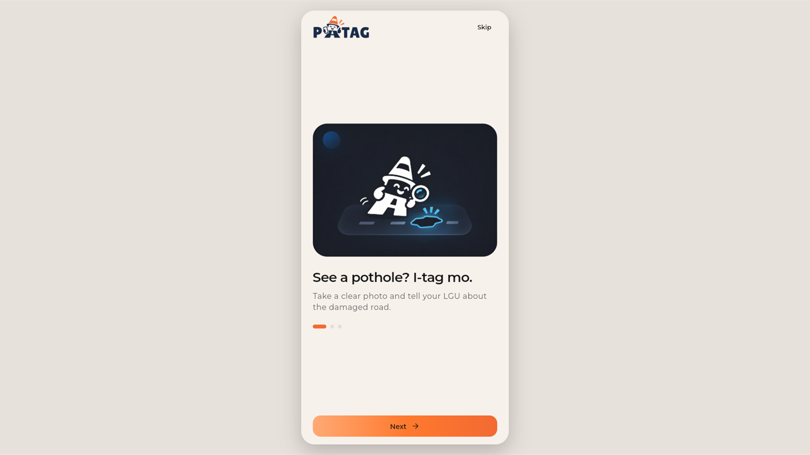

BSIT Student @ BulSU • Class of 2026
Building Thoughtful Digital Experiences.
I'm a BSIT student passionate about designing and developing intuitive websites, applications, and digital systems that solve real-world problems.
Core Technical Stack & Tools:
JavaScript (ES6+)
HTML5 & CSS3
React
PHP & MySQL
Flutter
Figma UI/UX
Git & GitHub
SELECTED WORK
Featured Projects
A collection of software solutions I've worked on, focused on solving real-world problems through thoughtful design and technology.
01 / EDUCATION TECHNOLOGY
CampusVoice
Campus Feedback & Survey Management System
A student-focused feedback and survey management platform designed to make campus communication more accessible and organized. It provides a digital space for collecting student opinions, managing surveys, and reviewing feedback to support informed institutional decisions.
Problem Solved:
Student feedback at universities is often scattered across paper forms or unstructured chats with low engagement and no aggregated visibility for campus administrators.
Key Features:
Automated survey distribution, real-time response aggregation, role-based admin insights, and mobile-friendly participation.
My Contribution:
Architected the survey submission interface, built client-side validation in JavaScript, and integrated relational PHP/MySQL submission endpoints.
PHP
MySQL
JavaScript
CSS3




02 / CIVIC TECHNOLOGY
PATAG
Smart Road Reporting & Maintenance Management System
A civic technology platform that empowers citizens to report potholes and damaged roads using photos and location-based reporting, while enabling local government personnel and maintenance teams to review, assign, and track road repairs.
Problem Solved:
Road hazards frequently go unaddressed due to lost citizen reports, missing GPS coordinates, and lack of tracking transparency in municipal engineering departments.
Key Features:
Location-based photo reporting, hazard severity classification, automated dispatch queues, and citizen repair status updates.
My Contribution:
Designed mobile UI and interactive flows in Figma; engineered citizen reporting screens in Flutter and responsive administrative management views in React.
Flutter
React
TypeScript
Figma
03 / AGRICULTURAL TECHNOLOGY
Pananim
Agricultural Trading & Logistics Coordination Platform
A digital agricultural platform designed to connect farmers, buyers, and logistics providers through transparent trading and coordinated supply chains. It improves crop price visibility, streamlines transactions, and coordinates cargo transportation to reduce post-harvest waste.
Problem Solved:
Smallholder agricultural producers face opaque middleman pricing and high transport costs, while buyers struggle to find verified harvest supply and predictable freight dispatch.
Key Features:
Live farm-gate crop pricing, verified multi-role marketplace, cargo pooling for shared freight transport, and order fulfillment tracking.
My Contribution:
Developed the dashboard interface using React and Vite, implemented reusable UI widgets, and organized responsive layouts for multi-device trading.
React
TypeScript
Vite
Tailwind CSS
pananim.ph/admin/overview

ABOUT ME
Engineering Interfaces with Purpose
A BSIT student dedicated to creating intuitive, accessible software for real people.
Mhaithan Lee H. Caliuag
BSIT Student • Front-End Developer
University
Bulacan State University (BulSU)
Academic Level
3rd-Year BSIT • Class of 2026
Location
Baliwag, Bulacan, Philippines
Focus Areas
Frontend Engineering, UI/UX Design
I am a third-year Information Technology student at Bulacan State University specializing in web engineering and human-computer interaction. My journey began with a curiosity about how people perceive and interact with digital interfaces, which quickly turned into a passion for writing clean, accessible code.
Rather than treating design and frontend engineering as separate worlds, I bridge both disciplines. I spend time researching user journeys and prototyping layouts in Figma, then implement them with semantic HTML, modular CSS, modern JavaScript, and React.
Through collaborative academic systems like PATAG, CampusVoice, and Pananim, I focus on software that addresses genuine challenges—whether that means giving students a structured voice on campus or helping local communities report hazardous road conditions with verifiable data.
User-Centered Design
Designing user flows and visual hierarchies that feel obvious and effortless to navigate.
Clean Frontend Craft
Writing structured, semantic, responsive code that loads fast and performs reliably.
Real-World Impact
Building functional technology that solves real civic, educational, and logistics problems.
TECHNICAL SKILLS
Tools & Technologies I Build With
A practical toolkit developed through academic coursework, collaborative projects, and hands-on implementation.
Frontend Development
Responsive web apps & semantic user interfacesCrafting responsive, accessible, and standards-compliant user interfaces using modern layouts and component architecture.
HTML5
CSS3 (Grid & Flexbox)
JavaScript (ES6+)
React
TypeScript Basics
Responsive Design
Mobile Development
Cross-platform mobile UI & citizen reportingBuilding intuitive, multi-screen mobile client interfaces for civic reporting systems with geolocation and device camera integration.
Flutter
Dart
Mobile UI Patterns
Geolocation Integration
Stateful Widgets
Programming & Backend
Server-side logic, forms & relational dataImplementing server-side data handling, form endpoints, database schemas, and relational queries for departmental software.
PHP
MySQL
REST API Basics
Relational Schema Design
Form Handling & Validation
Design & Workflow Tools
Wireframing, version control & quality assuranceApplying consistent design systems in Figma, managing team collaboration in GitHub, and testing code quality.
Figma (UI/UX)
Git & GitHub
VS Code
Selenium QA Testing
Chrome DevTools
ACADEMIC BACKGROUND
Education & Experience
Formal university coursework paired with student-led software development.
Bachelor of Science in Information Technology (BSIT)
Bulacan State University (BulSU) • Class of 2026 ExpectedThird-year student specializing in web engineering and human-computer interaction (Section BSIT 3H-G2). Enrolled in IT305 Advanced Web Development (ADET — Application Development and Emerging Technologies), database management, and active capstone research.
- Core Coursework: Advanced Web Development (IT305 / ADET), Database Systems (MySQL), Software Engineering, Object-Oriented Programming, and Web Systems & Technologies.
- Academic Standing: Active student developer leading UI/UX prototyping, frontend component architecture, and usability testing across class project groups.
Frontend Developer & UI Researcher
Academic Capstone & Course Projects • Bulacan State UniversityLead UI designer and frontend developer for major departmental systems: PATAG (road hazard reporting and maintenance dispatch system), CampusVoice (centralized student feedback and survey platform), and Pananim (agricultural crop trading and logistics dashboard).
- Designed interactive wireframes, user journeys, and component systems in Figma; transformed them into responsive HTML/CSS/JavaScript and React interfaces.
- Conducted usability walkthroughs with fellow students, identifying navigation friction points and refining button hierarchies.
- Collaborated via GitHub with feature branch isolation, pull request reviews, and automated testing via Selenium.
Campus Web & Student Project Collaborator
Student Collaborations • Baliwag, BulacanAssisted student initiatives and project groups in building clean, accessible web pages and organizing design assets. Focused on semantic HTML, mobile responsiveness, and collaborative Git practices.
- Mentored classmates on Git version control (branching, resolving merge conflicts, clear commit conventions).
- Advocated for accessibility standards (semantic landmark tags, sufficient contrast, responsive viewport units).
DEVELOPMENT PROCESS
How I Build Digital Experiences
A disciplined four-stage workflow that turns user needs into reliable, tested digital products.
01
Discover
Understand the problem, users, and requirements.
Identify core user pain points, analyze requirements, and define clear functional goals before writing any code.
02
Design
Plan user flows, interfaces, and system structure.
Map out user journeys, establish component hierarchies, and create interactive Figma prototypes to validate usability.
03
Develop
Build the interface and implement functionality.
Write clean, modular, and accessible frontend code using semantic HTML5, modern CSS Grid/Flexbox, and JavaScript/React.
04
Refine
Test, evaluate, and improve the experience.
Verify responsiveness across mobile, tablet, and desktop viewports; conduct usability checks; and polish visual interactions.
Let's Build Something Meaningful.
I'm always interested in learning, collaborating, and exploring opportunities to create useful digital experiences.
Direct Email
mhaithan.lee.c@gmail.com
GitHub
github.com/mhaithan-lee
Phone
+63 976 134 8316
Location
Baliwag, Bulacan, Philippines